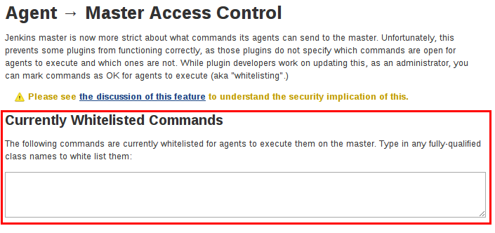

管理安全
从公司内部网的工作站, 到连接到公共互联网的高性能服务器，Jenkins无处不在。 为了安全支持这一广泛的安全和威胁配置文件的传播, Jenkins提供了许多配置选项 来启用, 编辑, 或禁用各种安全特性。
在Jenkins 2.0中,许多安全选项默认是启用的， e以确保Jenkins环境保持安全，除非管理员明确禁用某些保护。
本节将介绍管理员可用的各种安全选项 , 解释所提供的保护, 并权衡禁用其中的一些选项。
启用安全
当启用了 Enable Security c复选框时, 这是Jenkins 2.0以来的默认值, 用户可以使用用户名和密码登录， 以执行匿名用户无法执行的操作。 哪些操作需要用户登录 取决于所选择的授权策略和它的配置; 默认情况下匿名用户没有权限, 已登录用户完全控制。 对于任何非本地（测试）Jenkins环境，该复选框应该 always 启用。
web UI的启用安全部分允许Jenkins 管理员启用, 配置,或禁用应用于整个Jenkins环境的关键安全特性。
JNLP TCP 端口
Jenkins 使用TCP 端口通过JNLP协议与启用的代理通信,比如基于 Windows的代理。 在 Jenkins 2.0中,默认这个端口是禁用的。
对于希望使用基于JNLP的代理的管理员, 两个端口选项是:
-
Random: JNLP 端口是随机选择的，来避免在 Jenkins 主机上繁盛冲突。 随机 JNLP端口的缺点是他们是在Jenkins主机的引导下选择的, 这使得管理允许JNLP通信的防火墙规则变得困难。
-
Fixed: JNLP端口由Jenkins管理员选择的，并且在Jenkins主机的重新引导下是一致的。这使得管理基于JNLP代理连接到主服务器的防火墙规则变得容易。
访问控制
访问控制是保护Jenkins环境免受未经授权使用的主要机制。配置的两个方面对于在Jenkins中配置访问控制 是必要的:
-
Security Realm 告诉Jenkins环境如何以及从何处获取用户(或身份)信息。 也别称为 "认证"。
-
Authorization 配置，他告诉 Jenkins 环境， 哪些用户和/或组可以访问Jenkins的哪些方面, 以及何种程度。
使用安全与和授权配置，可以在Jenkins中配置非常轻松地或非常严格的身份认证和授权方案。
此外, 一些插件比如 基于角色的授权策略 插件可以扩展Jenkins的访问控制功能，以支持更加微妙的身份认证和授权方案。
安全域
默认情况下， Jenkins包含了对几个不同安全域的支持:
- Delegate to servlet container
-
对于委托认证运行Jenkins主机的servlet容器, 比如 Jetty。如果使用该选项, 请参考servlet 容器的 身份验证文档。
- Jenkins’ own user database
-
使用Jenkins自己内置的用户数据存储来进行身份验证，而不是委托给外部系统。 这是Jenkins 2.0或后来安装的Jenkins默认启用的，适用于小环境。
- LDAP
-
间所有的身份认证委托给配置的LDAP 服务器, 包括用户和组。对于已经配置了外部身份提供者比如LDAP的组织的大型安装，该选项更为常见。 这也支持活动目录安装。
|
由 LDAP plugin提供的该特性 可能不会安装到你的实例中。 |
- Unix user/group database
-
将身份验证委托给Jenkins主机上的底层Unix OS-级别的用户数据库。 该模式允许 重用Unix组进行授权。 比如, Jenkins 能够配置为 "在 `developers`组中的所有人都有管理员访问权限" 来支持该特性, Jenkins 依赖于可能需要在Jenkins环境外配置的 PAM。
|
Unix 允许用户和组拥有相同的名称。为了消除歧义, 使用`@` 前缀强制将名称结束为一个组。比如, |
插件能够提供额外的安全域，这可能有助于 将Jenkins合并到现有的身份系统中, 比如:
授权
安全域或身份认证, 指示 who 可以访问 Jenkins 环境。另一个难题是 Authorization, 它指示 在_what_ 地方他们可以访问Jenkins环境。默认情况下， Jenkins 支持几种不同的授权选项:
- Anyone can do anything
-
每个人都能完全控制Jenkins, 包括没有登陆的匿名用户。 Do not use this setting ，除了在本地测试Jenkins主机。
- Legacy mode
-
与Jenkins <1.164的行为完全相同。也就是说, 如果一个用户拥有 "admin" 角色, 就会被授予对系统的完全控制, 负责 (包括匿名用户) 只会拥有读访问权限。 除了在本地测试Jenkins主机，Do not use this setting。
- Logged in users can do anything
-
在该模式下, 每个登陆的用户对Jenkins完全控制。根据一个高级选项, 匿名用户获取Jenkins的访问权限, 或者根本无法访问。该模式有助于强制用户在操作前进行登录, 以便于对用户的行为进行审计跟踪。
- Matrix-based security
-
该授权方案对允许用户和组在Jenkins环境下能够进行哪些操作进行细粒度控制(见下面的屏幕截图)。
- Project-based Matrix Authorization Strategy
-
此授权方案是基于矩阵的安全性的扩展， 它允许为在项目配置屏幕中的 *each project*分别定义额外的访问控制列表 (ACL)。它允许特定的用户和组访问特定的项目, 而不是Jenkins 环境中的所有项目。 基于项目的矩阵授权定义的ACL是附加的，在配置全局安全屏幕中定义的访问授权将与 指定项目的ACL相结合。
|
基于矩阵的安全性和基于项目的矩阵授权策略由 Matrix Authorization Strategy Plugin插件提供，它可能不会安装在你的Jenkins中。 |
对于大多数的Jenkins环境, 基于矩阵的安全性提供了最大的安全和灵活性，因此建议将它作为 "生产"环境的起点。

Figure 1. Matrix-based security
上面显示的表格可以非常宽，因为每一列表示由Jenkins核心或插件提供的权限。将鼠标悬停在权限上将显示更多关于该权限的信息。
表中的每一行都代表了一个用户或组(也成为 "角色")。其中包括名为"匿名" 和 "身份验证" 的特殊条目。 "匿名" 条目表示授予访问Jenkins环境的所有未经身份验证的用户的权限。而 "身份验证' 可用于 授予访问Jenkins环境的所有已经通过身份验证的用户的权限。
在矩阵中授予的权限是附加的。比如，如果一个用户 "kohsuke" 是在 "开发者" 组和 "管理员"组, 那么授予"kohsuke" 的权限将会是授予 "kohsuke", "开发者", "管理员", "身份验证", 和 "匿名"的所有这些权限的联合。
跨站请求伪造
跨站请求伪造(或 CSRF/XSRF) [1] 是一个漏洞，允许未经身份验证的第三方通过模拟另一个身份验证的用户对web应用程序执行请求。 在Jenkins环境中,CSRF 攻击允许恶意的参与者删除项目, 修改构建, 或修改Jenkins的系统配置。为了防范这些漏洞, 从2.0开始，CSRF 保护已经默认启用了所有的Jenkins版本。

当启用该选项时, Jenkins 会检查 在Jenkins环境中可能更改数据的任何请求的CSRF 令牌, 或 "crumb"。它包含对远程API的任何表单提交和调用，包含使用 "Basic"身份验证的表单。
strongly recommended 启用 *enabled*该选项, 包括在私有的, 完全可信的网络上运行的实例。
说明
CSRF 保护 may 会导致更高级别的Jenkins用法的挑战, 比如:
-
一些Jenkins特性, 像远程 API, 当启用该选项时更加难以使用。参考 Remote API文档了解更多信息。
-
通过配置差的反向代理访问Jenkins可能会导致从请求中删掉CSRF HTTP 头, 从而导致保护操作失败。
-
过时的插件, 没有经过 CSRF 保护的测试,可能无法正常工作。
关于CSRF 攻击的信息可以在 on the OWASP website中找到。
代理/主机访问控制
概念上讲, Jenkins主服务和代理可以被看作一个聚合系统，它在多个离散的进程和机器上执行。 这允许代理请求主进程获取信息，例如，文件的内容等。
对于更大的或成熟的Jenkins 环境，Jenkins管理员可能会启用其他团队或组织提供的代理, 但是，一个统一的代理/主信任模型是不够的。
代理/主机访问系统被引入 [2]，允许Jenkins管理员在Jenkins主机和连接代理之间添加更细粒度的访问控制定义 。

在Jenkins 2.0中,默认这个子系统是打开的。
自定义访问
对于高级用户，他们可能希望允许从代理到Jenkins主机的某些访问模式, Jenkins 允许管理员从内置的访问控制规则中创建特定的豁免。

通过遵循上面高亮的链接, 管理员可以编辑 Commands 和*File Access*代理/主机访问控制规则。
命令
Jenkins中的"命令" 和它的插件是由他们的完全限定类名来标识的。这些请求的大多数都是通过一个主请求来执行的, 但是其中一些是通过一个代理的请求来执行。
这个子系统尚未更新的插件可能不会对每个命令所属的类别进行分类, 当主机执行未明确允许的命令的代理请求时, Jenkins会出错，并拒绝执行命令。
在这种情况下, Jenkins管理员可以 "白名单" [3]某些命令，以便在主服务器上执行。

高级
管理员也可以通过在`JENKINS_HOME/secrets/whitelisted-callables.d/目录下创建带有.conf`扩展名的文件来白名单类。
这些 .conf 文件的内容应该在单独的行上列出命令名。
目录中的所有 .conf 文件的内容将由Jenkins读取并合并，在目录中创建一个 列出所有已知的安全命令的`default.conf` 文件。 default.conf 在每一次的Jenkins中都将被重写。
Jenkins也管理名为 gui.conf`的文件, 在 `whitelisted-callables.d
目录, 通过web UI添加的命令被写入。 为了禁用管理员从web UI中改变白名单命令的能力,
在目录中放一个 gui.conf 文件，并改变它的权限，这样操作系统用户就不能写入Jenkins了。
文件访问规则
文件访问规则可用于验证从代理到主服务器的文件访问请求。每个文件访问规则都是一个三元组，其中必须包含以下元素:
-
allow/deny: 如果以下两个参数与当前正在考虑的请求匹配,allow条目将允许执行请求，而deny条目将拒绝被拒绝的请求, 无论后面的规则会说什么。 -
operation: 请求的操作类型。 存在以下 6个值。 该操作也可以通过逗号分隔符组合这些值。
all的值表示，所有列出的操作是允许或拒绝的。-
read: 读取文件内容或列出目录条目 -
write: 写文件内容 -
mkdirs: 创建一个新的目录 -
create: 在现有目录中创建一个文件 -
delete: 删除一个文件或目录 -
stat: 读取一个文件/目录的元数据, 比如时间戳, 长度, 文件访问模式。
-
-
file path: 指定与此规则匹配的文件路径的正则表达式。除了基本的正则表达式语法, 它还支持以下标记:
-
<JENKINS_HOME>可以作为前缀来匹配主机的JENKINS_HOME目录。 -
<BUILDDIR>可以作为前缀来匹配构建记录目录， 比如/var/lib/jenkins/job/foo/builds/2014-10-17_12-34-56。 -
<BUILDID>与timestamp格式的构建ID匹配, 如2014-10-17_12-34-56。
-
规则是有序的, 并按顺序执行。以最早匹配为准。
比如, 以下的规则允许访问`JENKINS_HOME`中除了 secrets 文件夹以外的所有文件
:
# To avoid hassle of escaping every '\' on Windows, you can use / even on Windows.
deny all <JENKINS_HOME>/secrets/.*
allow all <JENKINS_HOME>/.*次序是非常重要的! 下面的规则写错了，因为第二个规则永远不会匹配, 并且允许所有的代理访问`JENKINS_HOME`下的所有文件和文件夹:
allow all <JENKINS_HOME>/.*
deny all <JENKINS_HOME>/secrets/.*高级
管理员还可以通过在`JENKINS_HOME/secrets/filepath-filters.d/目录中创建带有.conf.扩展名的文件来添加文件访问规则。
Jenkins自身在该目录下生成 `30-default.conf 文件，
它包含了Jenkins项目认为的在兼容性和安全性之间的最佳平衡的默认值。 要禁用该内置的默认,
请用一个空的文件置换 30-default.conf ，这样操作系统用户就无法写入。
在每个引导中, Jenkins 会读取`filepath-filters.d`目录中按字母顺序排列的所有的 .conf 文件, 以指示其负载顺序的方式命名文件是很好的做法。
Jenkins 还管理 50-gui.conf, 在 filepath-filters/ 目录中, 通过web UI添加的文件访问规则被写入。 为了禁用管理员从web UI中改变文件访问规则的能力,
在目录中放一个 50-gui.conf 文件，并改变它的权限，这样操作系统用户就不能写入Jenkins了。
禁用
虽然不推荐, 但如果Jenkins环境中的所有代理都被认为是和主机一样程度的"信任的" , 代理/主机访问控制特性有可能被禁用。 此外, Jenkins环境中的所有用户都应该拥有和所有已配置项目一样的访问级别。
管理员可以在web UI中通过在*Configure Global Security* 页面上取消选中该复选框，来禁用代理/主机访问控制。或者，管理员可以在`JENKINS_HOME/secrets`中创建一个名为
slave-to-master-security-kill-switch 内容为 `true`的文件并重启Jenkins。
|
随着环境的发展，大多数Jenkins环境会随着时间的推移而增长，要求他们的信任模型不断演化。请考虑定期进行 "检查" ，来检查是否禁用的安全设置应该被重新启用。 |
2. Starting with 1.587, and 1.580.1, releases